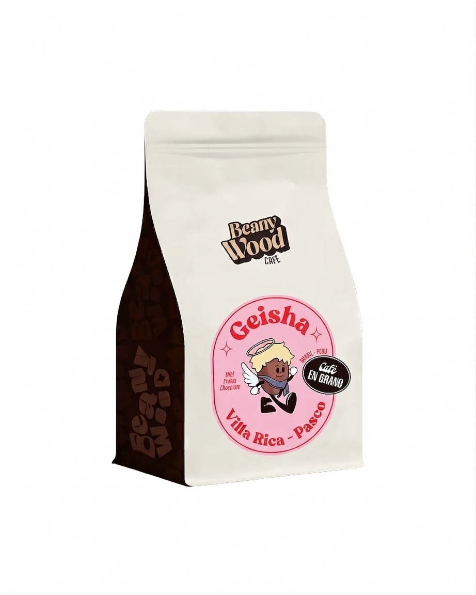
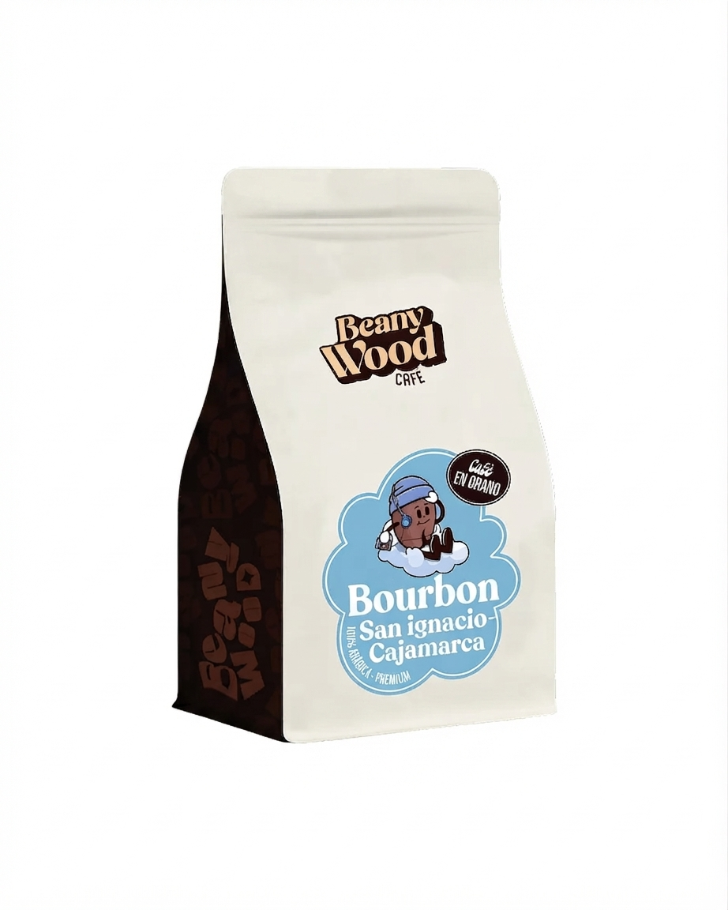
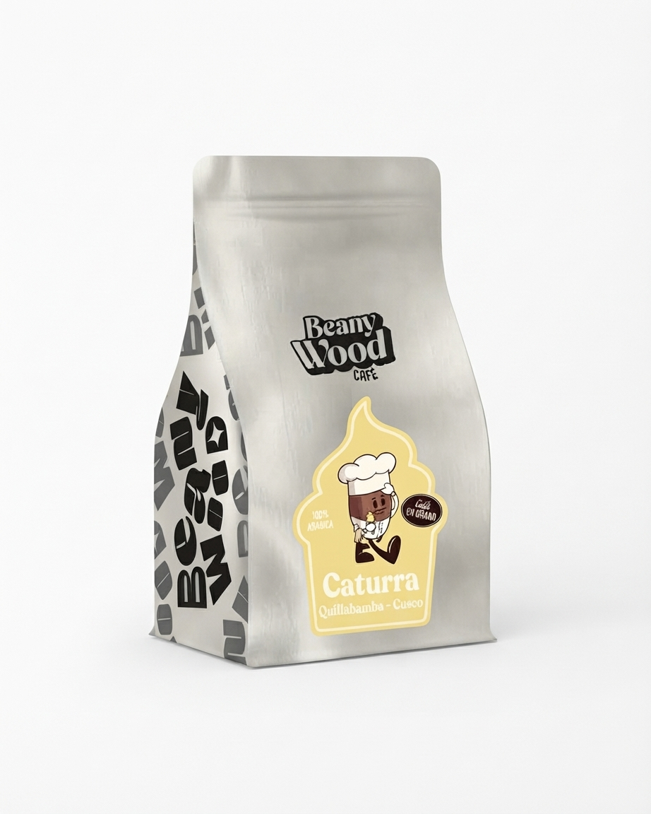

Café Geisha

Notas de cata: Flores blancas, jazmín y durazno.
- Región: Villa Rica, Pasco
- Altitud: 1,750 m s. n. m.
- Proceso: Lavado
Cada bolsa refleja el microclima y el esmero de su tierra de origen.

Notas de cata: Flores blancas, jazmín y durazno.

Notas de cata: Chocolate con leche, caramelo y frutos secos.

Notas de cata: Cítricos limpios, panela y cuerpo sedoso.
Sigue estos pasos ordenados para lograr una taza limpia, aromática y balanceada en casa: